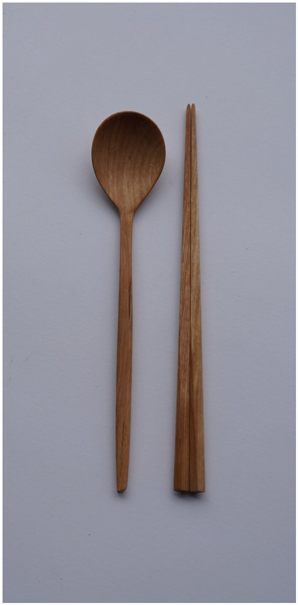
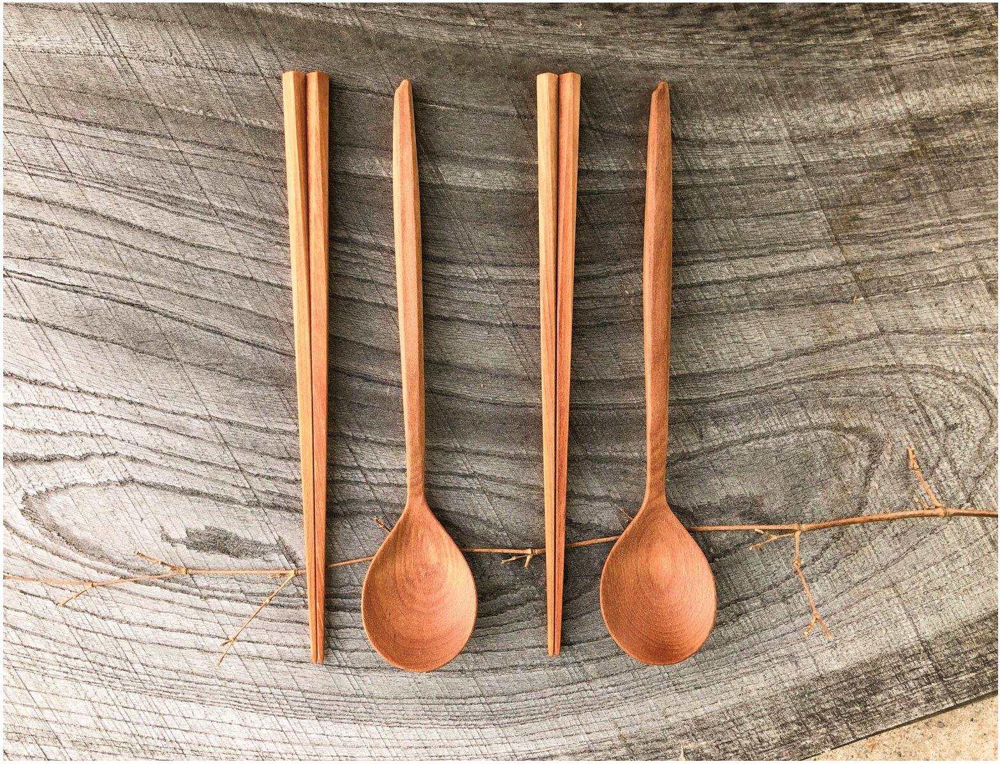

Cutlery carved by hand for an ordinary table. Each piece is worked one at a time from Korean birch, so grain and colour differ from one to the next, and the shape is drawn to sit easily in the hand.
Finished in natural oil, so the wood keeps its own touch and grain. Spoon and chopsticks can be chosen separately.

About 4.2 × 22 × 1 cm. Korean birch. Walnut oil.
As each piece is carved by hand, dimensions may vary. Slight differences in colour and form are the character of each individual wood.